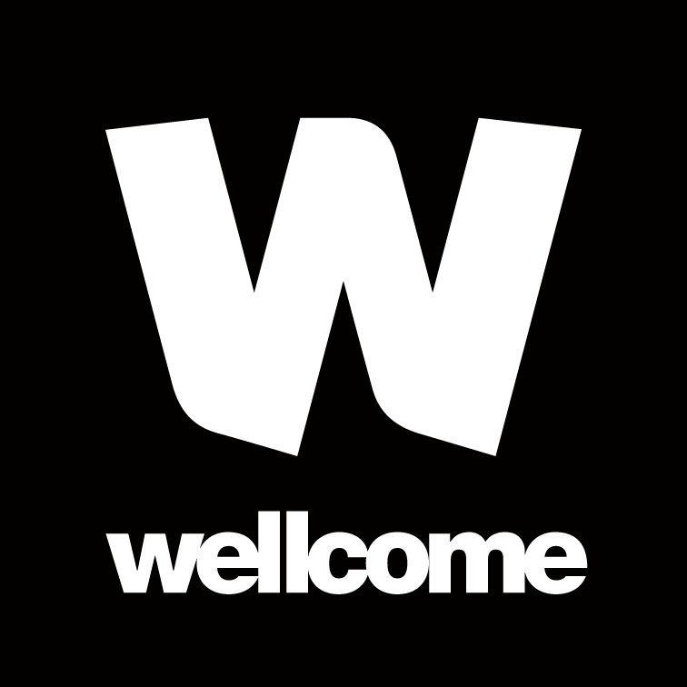

class: center, middle # Open research in life science: ## Funding foundational tools, trust, and talent Yo Yehudi - Open Source Tech Lead Data for Science and Health - Wellcome Trust FOSDEM 2021 Twitter: @yoyehudi Fediverse: @yoyehudi@scholar.social --- # Meet Sam Sam does science in a lab, and is what many people might think of as a "traditional" scientist. --- # Now meet Joy Joy works in the same area as Sam, but writes computer code to do their work, a **non-traditional academic output**. --- # It's all essential Sam and Joy both do essential research work, but we'll be focusing on Joy, and some of the challenges they face --- # Challenges for computational research ### Missing computational _tools_ for research, insufficient incentive to draw, retain, and reward _talent_, and insufficient _trust_ in computational work. --- # Tools - Much research is so niche the computational tools needed may not exist, _and yet..._ - Sometimes it's the opposite, and tools are fragmented across many software tools and standards.  --- # Trust A lot of tech has a **bad name** for a **good reason** - companies, governments, healthcare officials, and researchers don't always use people's data in trustworthy ways. --- # Talent - Code is not papers - Good practice may not be directly appreciated (except by future you and other maintainers) --- # Talent - May not be shared, or may not be open in spirit - Researchers may (justifiably) feel the need to hide the code aspects of their work in a grant application, or not realise they are doing (or should be doing) software engineering / data science --- # Talent ## Places where diversity tends to be bad: - software engineering is bad, - open source - some research domains. We're at the intersection of these places! --- # Data for Science and Health ### Our goal: To fund the Tools, Talent, Trust that makes trustworthy data science a first-class citizen in the research ecosystem --- # Wellcome's focus The Wellcome Trust's strategy focuses on three primary areas, as well as a broader "discovery research" umbrella: <br> <br>  - Global heating - Mental health - Infectious disease --- # Open work we've (co-)funded so far **afrimapr** Open source components and training to ease the use of health data by analysts in Africa [github.com/afrimapr](https://github.com/afrimapr)  --- # Open work we've (co-)funded so far **OpenSAFELY** Open tool to make computational work across healthcare data secure and safe. [github.com/opensafely](https://github.com/opensafely/) --- # Shining a spotlight on the **good** Well-done software means focusing on maintainable code, but also on: - Documentation (for users _and_ developers) - Accessibility (in the sense of [a11y](https://www.a11yproject.com/), rather than [FAIR](https://www.go-fair.org/fair-principles/)) - Healthy and diverse community - UX (User Experience) --- # Interested / think there might be a good fit? We're curating a blog to spotlight good practice in open source research. Currently looking for: - Software to share (in the form of a repo, docs, papers, blogs, podcasts, notebooks, useful tools, etc.) - Guest editors to help curate collections of 2-4 tools --- # Interested / think there might be a good fit? If you have a project idea for a software tool that you think might fit into our funding interests, [please contact us](https://wellcome.org/what-we-do/our-work/data-science-and-health-trustworthy-data-science)! My email: [y.yehudi@wellcome.org](mailto:y.yehudi@wellcome.org) The team: [ContactDataForScienceAndHealth@wellcome.org](mailto:ContactDataForScienceAndHealth@wellcome.org) Twitter: [yoyehudi](https://twitter.com/yoyehudi)